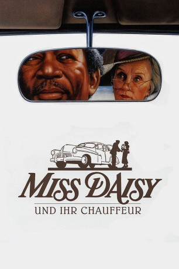
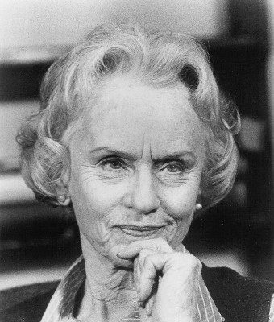
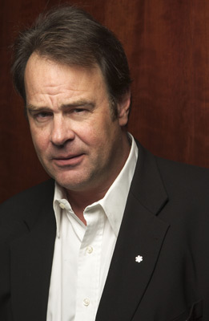
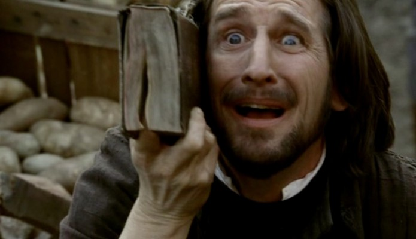
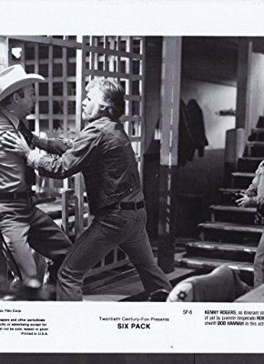

#58 Miss Daisy und ihr Chauffeur
Alternativ: Driving Miss Daisy
Auszeichnungen: 4 Oscars gewonnen für 5 Oscars nominiert 3 GoldenGlobes gewonnen 1 BAFTA-Awards gewonnen
 
 IMDB-Wertung: 7.4 / 10
IMDB-Wertung: 7.4 / 10  Metascore: 81
Metascore: 81 
Der Film erzählt die Geschichte der alten jüdischen Witwe Daisy Werthan und ihres farbigen Chauffeurs Hoke. Aus der anfänglichen Abneigung entwickelt sich in fast 25 Jahren, eine tiefe Freundschaft zwischen den beiden so unterschiedlichen Charakteren. Oscarprämierte Tragikkomödie mit Starbesetzung, die auf dem gleichnamigen Theaterstück von Alfred Uhry basiert.
Jahr: 1989
Dauer: 99 Minuten
FSK: 6
Land: USA Studio: Warner Bros.Tonspuren: DTS - ,
Untertitel:
Auflösung: 1080p (1920×1080) Größe: 8949 MB
Genre: Drama
Regisseur:  Bruce Beresford
Bruce Beresford
Drehbuch: Alfred Uhry, Alfred Uhry
Soundtrack: Hans Zimmer
Darsteller:
 Morgan Freeman als Hoke Colburn
Morgan Freeman als Hoke Colburn-  Jessica Tandy als Daisy Werthan
-  Dan Aykroyd als Boolie Werthan
- Patti LuPone als Florine Werthan
- Esther Rolle als Idella
- Joann Havrilla als Miss McClatchey
- Crystal R. Fox als Katie Bell
-  Ray McKinnon als Trooper #1
- Jen Harper als Biltmore Hotel Dinner Guest , uncredited
 Martin Luther King als Himself , archive sound, uncredited
Martin Luther King als Himself , archive sound, uncredited- D. Taylor Loeb als Girl at Temple , uncredited
- William Hall Jr. als Oscar
- Alvin M. Sugarman als Dr. Weil
- Clarice F. Geigerman als Nonie
- Muriel Moore als Miriam
- Sylvia Kaler als Beulah
- Carolyn Gold als Neighbor Lady
-  Bob Hannah als Red Mitchell
- Ashley Josey als Trooper #2
- Jack Rousso als Slick
- Fred Faser als Insurance Agent
- Indra A. Thomas als Soloist
- Jay Freer als Extra at MLK Speech , uncredited
Datei: X:\1989\Miss Daisy und ihr Chauffeur (1989, FSK6, 1920x1080).mkv seit 02.02.2015
Festplatte: HD 1987-1991
 Es gibt insgesamt 54 Filme in der Gruppe '1989'
Es gibt insgesamt 54 Filme in der Gruppe '1989'